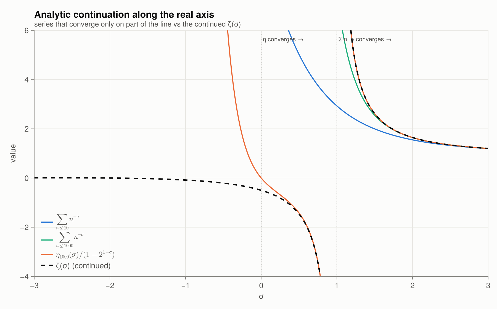
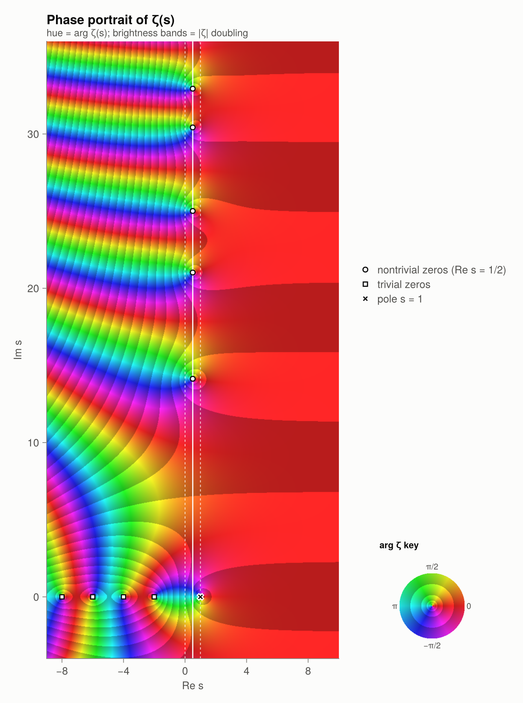
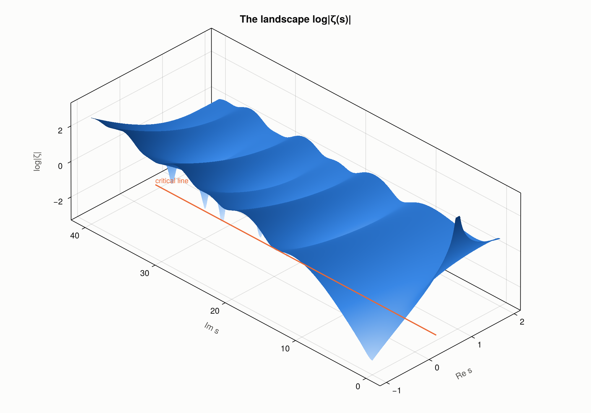
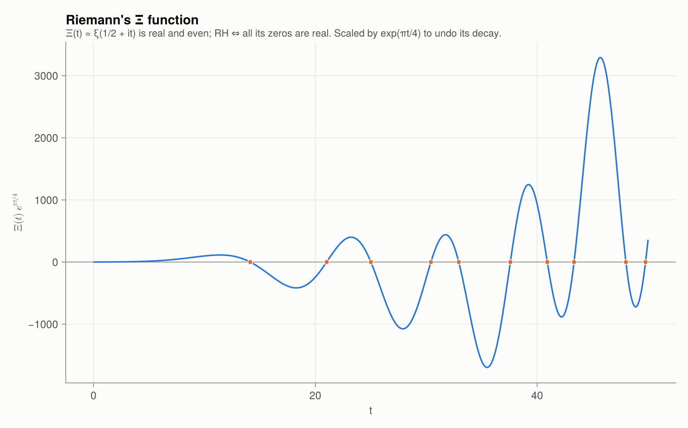

3 · Analytic continuation
The series $\sum n^{-s}$ diverges when $\operatorname{Re} s \le 1$. Yet the function it defines has a unique analytic extension to $\mathbb{C}\setminus\{1\}$: once a holomorphic function is known on an open set, it is determined everywhere it can be continued. Riemannian implements three independent continuations, and they agree.
Route 1: alternating series ($\operatorname{Re} s > 0$)
\[\zeta(s) = \frac{\eta(s)}{1 - 2^{1-s}}, \qquad \eta(s) = \sum_{n \ge 1} \frac{(-1)^{n-1}}{n^s}.\]
The η-series converges, slowly, for $\operatorname{Re} s > 0$. zeta_borwein accelerates it with P. Borwein's algorithm: with $d_k = n\sum_{i=0}^{k} \frac{(n+i-1)!\,4^i}{(n-i)!\,(2i)!}$,
\[\eta(s) \approx -\frac{1}{d_n} \sum_{k=0}^{n-1} \frac{(-1)^k (d_k - d_n)}{(k+1)^s},\]
with an error of about $(3+\sqrt8)^{-n}$ for small $|t|$.
Route 2: Euler–Maclaurin (all $s \neq 1$)
Replace the tail of the sum by an integral plus Bernoulli corrections:
\[\zeta(s) = \sum_{n=1}^{N-1} n^{-s} + \frac{N^{1-s}}{s-1} + \frac{N^{-s}}{2} + \sum_{k=1}^{M} \frac{B_{2k}}{(2k)!}\, s(s+1)\cdots(s+2k-2)\, N^{-s-2k+1} + R_{N,M}(s).\]
Every term on the right is analytic for $s \neq 1$, so the formula is an analytic continuation. The only singularity is the simple pole of $\frac{N^{1-s}}{s-1}$, with residue 1. zeta_em chooses $N$ and $M$ from $|s|$ and the floating-point precision.
Route 3: the functional equation
Riemann proved that
\[\zeta(s) = \chi(s)\,\zeta(1-s), \qquad \chi(s) = 2^s \pi^{s-1} \sin\!\left(\frac{\pi s}{2}\right) \Gamma(1-s).\]
In symmetric form, the completed zeta function
\[\Lambda(s) = \pi^{-s/2}\,\Gamma\!\left(\tfrac{s}{2}\right) \zeta(s) \quad\text{satisfies}\quad \Lambda(s) = \Lambda(1-s).\]
So the behaviour of $\zeta$ on the left half-plane mirrors its behaviour on the right, reflected across the critical line $\operatorname{Re} s = \tfrac12$. zeta uses Euler–Maclaurin for $\operatorname{Re} s \ge 0$ and the functional equation for $\operatorname{Re} s < 0$.
s = 0.3 + 5im
(borwein = zeta_borwein(s), euler_maclaurin = zeta_em(s), zeta = zeta(s))(borwein = 0.6756489981160234 + 0.2541447865546769im, euler_maclaurin = 0.6756489981160281 + 0.25414478655467554im, zeta = 0.6756489981160281 + 0.25414478655467554im)s = -2.5 + 20im
zeta(s), chi_factor(s) * zeta(1 - s)(-15.318439621408933 - 28.862170551124297im, -15.318439621408933 - 28.862170551124297im)completed_zeta(0.2 + 3im), completed_zeta(0.8 - 3im)(-0.08415920616197665 + 0.020260130773158525im, -0.08415920616197674 + 0.020260130773158497im)On the critical line $|\chi(\tfrac12 + it)| = 1$:
abs(chi_factor(0.5 + 123.4im))0.9999999999999716Watching continuation happen
On the real axis the partial sums $\sum_{n \le N} n^{-\sigma}$ follow $\zeta(\sigma)$ only for $\sigma > 1$. The η-quotient follows it down to $\sigma = 0$. The continued function keeps going smoothly, through $\zeta(0) = -\tfrac12$, to the left:
plot_analytic_continuation()
$\zeta(-1) = -\tfrac1{12}$ is a value of the continued function. The series $\sum n$ itself diverges. The statement only says that the unique analytic function agreeing with $\sum n^{-s}$ for $\operatorname{Re} s > 1$ takes the value $-\tfrac1{12}$ at $s = -1$.
zeta(-1), zeta_negint_exact(1)(-0.08333333333333333, -1//12)ζ on the whole plane
Phase portrait: the hue encodes $\arg \zeta(s)$ and the brightness bands mark where $|\zeta|$ doubles. Every zero is a point where all the colours meet, running counter-clockwise in the order red → yellow → green → blue. The pole at $s = 1$ has the same colours in the opposite order.
plot_domain_coloring()
The modulus $\log|\zeta(s)|$ as a landscape. The zeros are the downward spikes on the critical line:
plot_modulus_surface()
Riemann's ξ function
Multiplying $\Lambda$ by $\tfrac12 s(s-1)$ removes the poles at 0 and 1:
\[\xi(s) = \tfrac12 s(s-1)\,\pi^{-s/2}\,\Gamma\!\left(\tfrac s2\right)\zeta(s).\]
$\xi$ is entire, satisfies $\xi(s) = \xi(1-s)$ and $\xi(\bar s) = \overline{\xi(s)}$, and its zeros are exactly the nontrivial zeros of $\zeta$. On the critical line $\Xi(t) = \xi(\tfrac12 + it)$ is real, and
RH ⇔ every zero of the real, even, entire function $\Xi$ is real.
xi(0.5 + 10im), Xi(10.0)(0.03796785031093589 + 7.234762512383155e-17im, 0.03796785031093589)plot_xi()
Functions in this chapter
zeta, zeta_em, zeta_borwein, dirichlet_eta, chi_factor, completed_zeta, xi, Xi, loggamma_c.